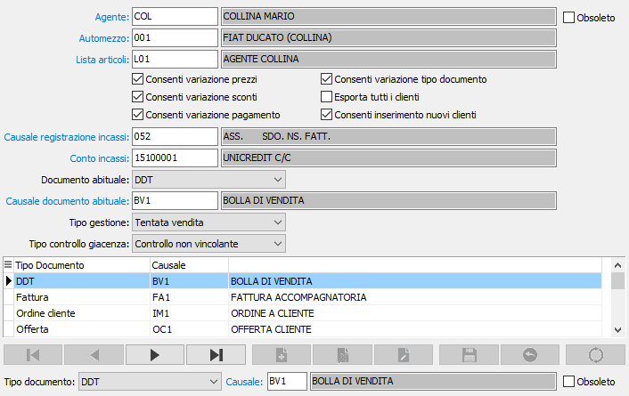

Agenti
La procedura consente di gestire l'anagrafica agenti di OS1Mobile, dove inserire i dati relativi agli agenti che opereranno con i vari dispositivi.

L'AGENTE deve esistere nell'anagrafica agenti di OS1; se gestita la tentata vendita, per ogni agente deve essere indicato l’automezzo, che deve essere codificato, tramite l'apposita procedura di manutenzione, e contiene l'indicazione del codice di magazzino da movimentare.
La lista articoli è, come dice il nome stesso, un elenco di articoli, e se impostata vincola l’agente a gestire solo quanto indicato all'interno della lista stessa. Le liste possono essere gestite per categoria e/o per singolo articolo ed inserite dall'apposita procedura di manutenzione.
Per ogni agente deve essere indicato, tramite le relative caselle di spunta, se consentire la variazione dei prezzi, la variazione degli sconti, la variazione del pagamento e la variazione del tipo documento, la possibilità di inserimento di nuovi clienti e se esportare tutti i clienti o solo quelli in cui l’agente è presente a livello di anagrafica clienti/destinazione di OS1Mobile.
Se la causale di registrazione incassi e la causale documento abituale non sono inserite, saranno utilizzate quelle presenti in Configurazione OS1Mobile, mentre per il conto incassi sarà utilizzato il conto “Cassa contanti” inserito nei codici fissi.
Tramite la casella TIPO GESTIONE si deve specificare se l’agente gestisce la raccolta ordini, la tentata vendita o entrambi; tramite la casella TIPO CONTROLLO GIACENZA è possibile specificare se deve essere gestito il controllo, vincolante o meno, della giacenza in emissione Ddt e fatture.
La parte inferiore della finestra consente l'inserimento delle causali da utilizzare per i tipi movimento che l'agente potrà effettuare, indicando il tipo di documento e la relativa causale; le tipologie, con le relative causali, sono le seguenti:
DDT: dove è possibile inserire una causale Ddt di vendita
Fattura: dove è possibile inserire una causale fattura di vendita
Ordine clienti: dove è possibile inserire una causale ordine cliente
Offerta: dove è possibile inserire una causale offerta cliente
Carico fiscale: dove è possibile inserire una causale di magazzino utilizzata per generare il movimento di magazzino nel caso in cui il carico fiscale sia gestito sul dispositivo.
Carico integrativo: dove è possibile inserire una causale di magazzino utilizzata per generare il movimento corrispondente nel caso in cui il carico fiscale sia gestito sul dispositivo, per generare i movimenti di magazzino di carico
Ricarico parziale: dove è possibile inserire una causale di magazzino utilizzata per generare il movimento corrispondente nel caso in cui il carico fiscale sia gestito sul dispositivo, per generare i movimenti di magazzino di carico
Scarico parziale: dove è possibile inserire una causale di magazzino di utilizzata per generare il magazzino in caso di scarico parziale
Reso globale: dove è possibile inserire una causale utilizzata per generare il magazzino in caso di reso globale
NB.: Le causali di magazzino, sia di carico che di scarico, devono essere configurate per gestire il passaggio fra magazzini (Classe: Movimento fra magazzini).